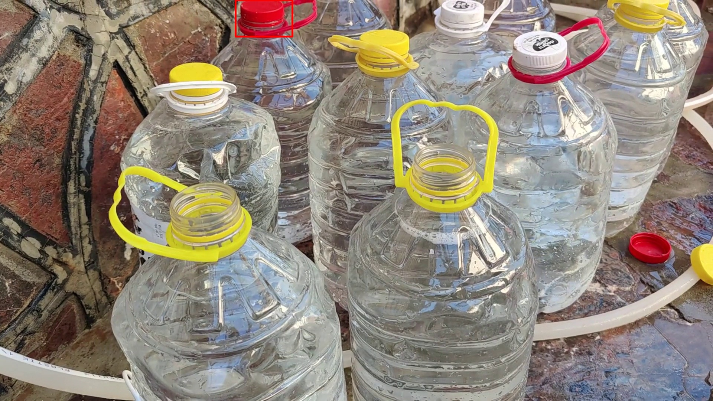
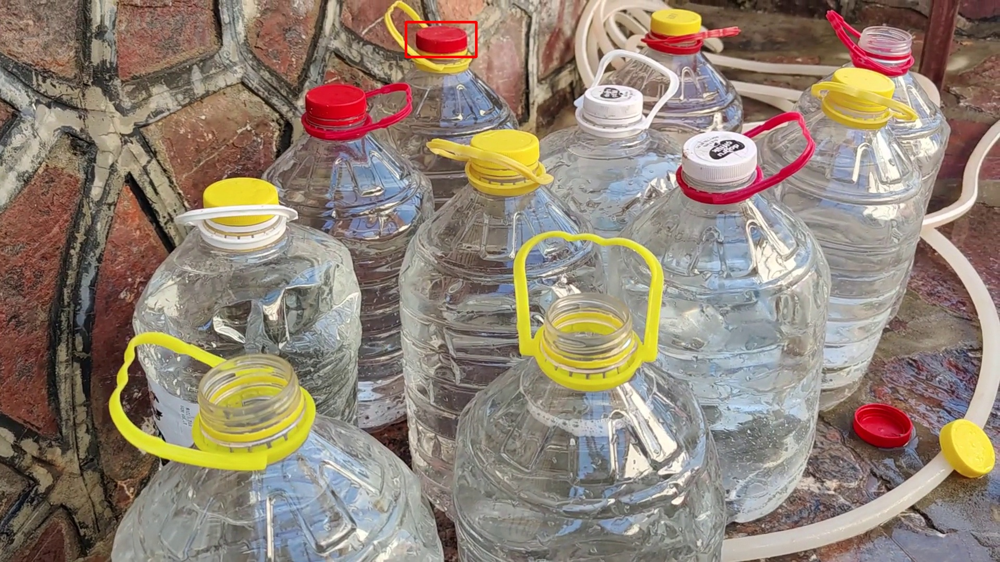
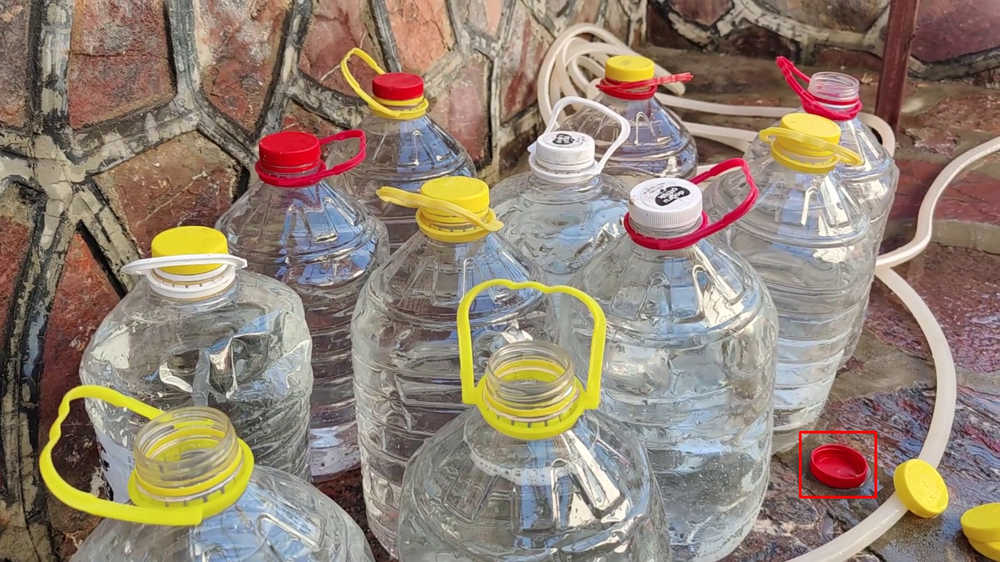
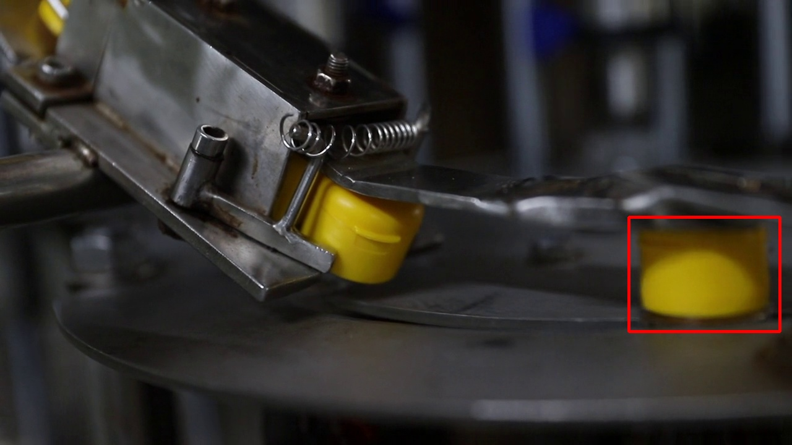
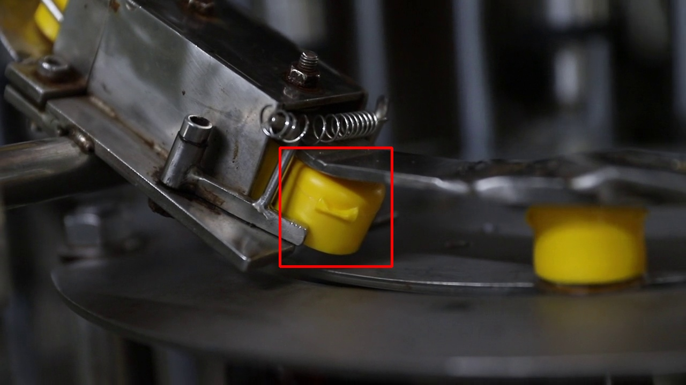
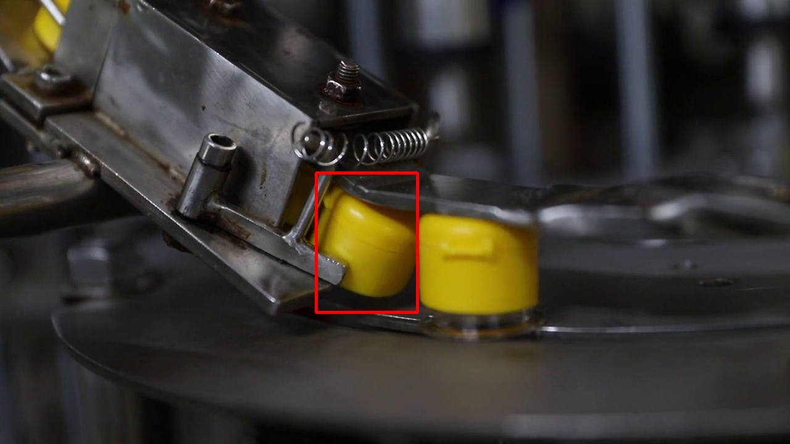
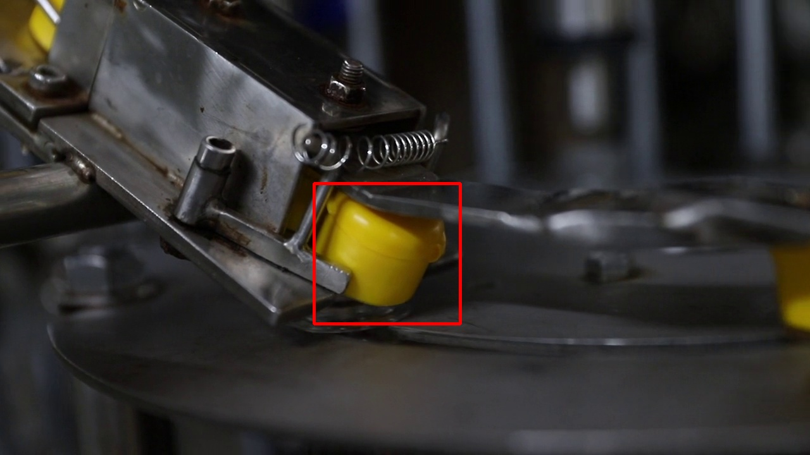

Siete conflictos para adjudicación humana No se ha corregido ninguna clase. Colocación, ausencia y defecto no se deducen de nombres o notas. La revisión usa una copia con historial preservado y requiere una decisión humana.
Auditar las 136 cajas TAPA · Informe y plan de datos · Cómo adjudicar
Conflicto 1 · vid_557eef7acddd10c7439ddd8f_f000120 Original sin alterar Caja humana registrada ENVASE; no reclasificada 
{
"sample_id": "vid_557eef7acddd10c7439ddd8f_f000120",
"box_id": "011cc367-0a4f-4dae-b3e3-414a0f0e6e95",
"clase_guardada": "ENVASE",
"nota_humana": "tapa roja",
"bbox_xyxy": [
633.9881009178334,
0,
786.7242450891142,
98.10179315964241
]
} Abrir anotador existente en copia de revisión · Seleccione el sample_id indicado y la caja por ID. Autor real, observación de adjudicación y nueva revisión; no cambia el original.
Conflicto 2 · vid_557eef7acddd10c7439ddd8f_f000240 Original sin alterar Caja humana registrada ENVASE; no reclasificada 
{
"sample_id": "vid_557eef7acddd10c7439ddd8f_f000240",
"box_id": "40004408-7538-4504-96be-18326d359f3b",
"clase_guardada": "ENVASE",
"nota_humana": "tapa roja",
"bbox_xyxy": [
779.2126765370077,
41.764173249680866,
914.4217357255285,
109.36931628199093
]
} Abrir anotador existente en copia de revisión · Seleccione el sample_id indicado y la caja por ID. Autor real, observación de adjudicación y nueva revisión; no cambia el original.
Conflicto 3 · vid_557eef7acddd10c7439ddd8f_f000330 Original sin alterar Caja humana registrada ENVASE; no reclasificada 
{
"sample_id": "vid_557eef7acddd10c7439ddd8f_f000330",
"box_id": "50478c3f-aa0c-4659-af31-5028d57adc44",
"clase_guardada": "ENVASE",
"nota_humana": "tapa roja suelta",
"bbox_xyxy": [
1536.0851525648275,
830.3763695690784,
1680.8623476244895,
955.0873601996204
]
} Abrir anotador existente en copia de revisión · Seleccione el sample_id indicado y la caja por ID. Autor real, observación de adjudicación y nueva revisión; no cambia el original.
Conflicto 4 · vid_8a2b94bcf49a24212a443df0_f000100 Original sin alterar Caja humana registrada ENVASE; no reclasificada 
{
"sample_id": "vid_8a2b94bcf49a24212a443df0_f000100",
"box_id": "ce00f4be-3086-4e9f-a0fc-68a324a97b27",
"clase_guardada": "ENVASE",
"nota_humana": "tapa amarilla",
"bbox_xyxy": [
1016.4117188616427,
350.9885941788447,
1260.0961268558056,
536.3827168540879
]
} Abrir anotador existente en copia de revisión · Seleccione el sample_id indicado y la caja por ID. Autor real, observación de adjudicación y nueva revisión; no cambia el original.
Conflicto 5 · vid_8a2b94bcf49a24212a443df0_f000250 Original sin alterar Caja humana registrada ENVASE; no reclasificada 
{
"sample_id": "vid_8a2b94bcf49a24212a443df0_f000250",
"box_id": "4bacdeaa-1c24-49d7-9e8a-24627c32c6b2",
"clase_guardada": "ENVASE",
"nota_humana": "tapa amarilla",
"bbox_xyxy": [
522.3536125020154,
276.44868129625564,
730.6798928703096,
498.15711564574366
]
} Abrir anotador existente en copia de revisión · Seleccione el sample_id indicado y la caja por ID. Autor real, observación de adjudicación y nueva revisión; no cambia el original.
Conflicto 6 · vid_8a2b94bcf49a24212a443df0_f000300 Original sin alterar Caja humana registrada ENVASE; no reclasificada 
{
"sample_id": "vid_8a2b94bcf49a24212a443df0_f000300",
"box_id": "828408df-22d5-4bb1-b712-427c230eea56",
"clase_guardada": "ENVASE",
"nota_humana": "tapa amarilla",
"bbox_xyxy": [
511.84171863218637,
280.27124560027437,
676.2092595687782,
505.80224425378117
]
} Abrir anotador existente en copia de revisión · Seleccione el sample_id indicado y la caja por ID. Autor real, observación de adjudicación y nueva revisión; no cambia el original.
Conflicto 7 · vid_8a2b94bcf49a24212a443df0_f000350 Original sin alterar Caja humana registrada ENVASE; no reclasificada 
{
"sample_id": "vid_8a2b94bcf49a24212a443df0_f000350",
"box_id": "f7f8b8c8-d6be-458e-a044-966159612618",
"clase_guardada": "ENVASE",
"nota_humana": "tapa amarilla",
"bbox_xyxy": [
495.5960966819804,
289.8276538996246,
726.8573287423187,
512.491724403724
]
} Abrir anotador existente en copia de revisión · Seleccione el sample_id indicado y la caja por ID. Autor real, observación de adjudicación y nueva revisión; no cambia el original.